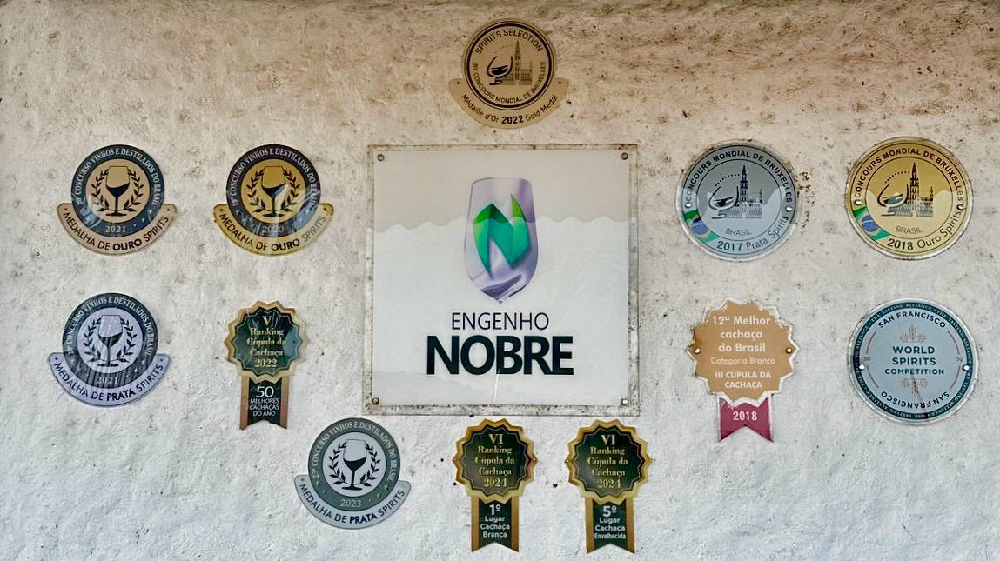
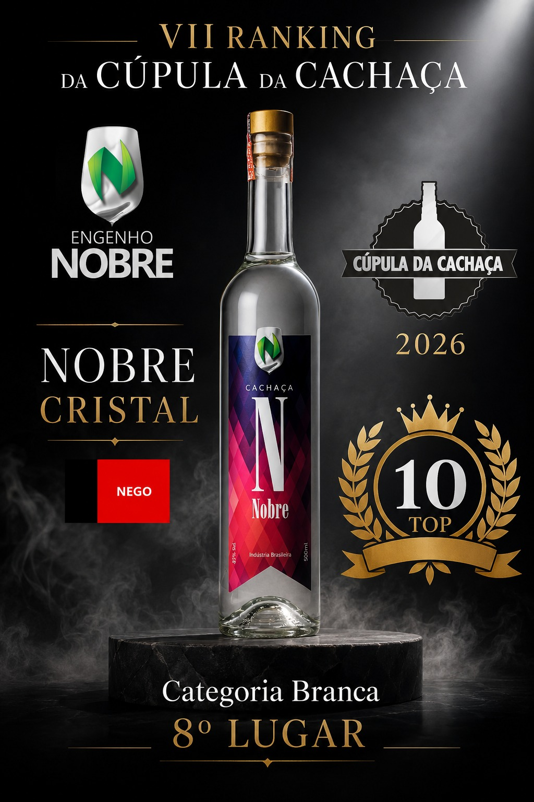
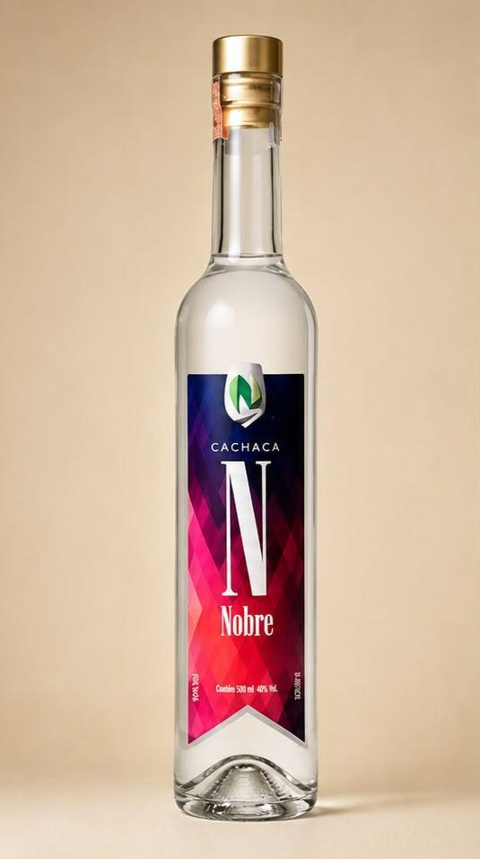
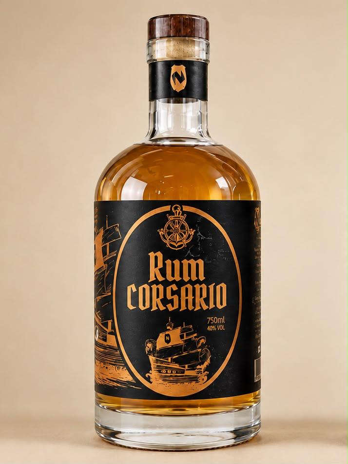

Somos o primeiro engenho com bioconstrução da Paraíba — e produzimos cachaças reconhecidas com premiações oficiais pelo rigor artesanal. Venha sentir de perto.
Melhor Branca
Cúpula da Cachaça (2024)
Ouro & Prata
Conc. Mundial Bruxelas
Uma história de conquistas
Uma evolução na busca de uma Cachaça cada vez melhor, mantendo sempre a qualidade e atenção na fabricação.

Mural oficial de premiações e medalhas do Engenho Nobre

Nobre Cristal
8º Lugar — Categoria Branca (2026)

Arretada Vaquejada
5º Lugar — Categoria Blend (2026)

Nobre Ocean
10º Lugar — Categoria Blend (2026)
.jpeg)
Medalha de Prata
Concurso Mundial de Bruxelas (2017)
Melhor Cachaça Branca do Brasil
Consagração máxima da qualidade pura.
Medalha de Prata — Arretada Mandacaru
Reconhecimento internacional no prestigiado concurso americano.
Medalha de Ouro (Etapa Brasil)
A excelência da Nobre Branca reconhecida.
.jpeg)
Formação de excelência em destilados
Cada lote produzido no Engenho Nobre passa por rigoroso controle químico, sensorial e de fermentação, unindo a engenharia civil à ciência alambiqueira.
Nossa Raiz
Inaugurado em 2017 em Cruz do Espírito Santo, a apenas 30 km de João Pessoa, o Engenho Nobre nasceu com um compromisso inegociável: fabricar cachaças com profundo rigor técnico, respeito às normas legais e proteção ambiental.
Por trás dessa alquimia está Murilo Vilela Coelho. Engenheiro Civil por formação e sempre apreciador de destilados, ele decidiu no final de 2014 que mergulharia na produção de cachaça. Após firmar parceria com um produtor local de Sobrado, iniciou uma intensa jornada de especialização acadêmica e prática para dominar a arte da fermentação, destilação e elaboração de blends.
Especialização contínua e aprimoramento técnico
Tornou-se Mestre Alambiqueiro e Mestre Cachacier pelo Cana Brasil em Itaverava (MG).
Realizou o “III Treinamento em Qualidade de Cachaça Envelhecida” e o “Workshop de Fundamentos e Composição de Blends” na ESALQ-USP, em Piracicaba (SP).
Participou do curso “A Ciência do Blend” realizado em João Pessoa pelo LABM e Cachaçarias Nobre de MG.
Aprofundou-se no “Percurso Multissensorial da Cachaça” com Mauricio Maia e Isadora Ribeiro, em Areia (PB).
Fez o curso “A Arte da Fermentação Cachaça e Rum” da Smart Yeast de Piracicaba, realizado em João Pessoa.
Expandiu a expertise com os cursos de Gin, Cachaça Avançada e Multissensorial pelo Inovbev, com a Dra. Aline Bortoletto.
Arquitetura viva
Combinando a formação em Engenharia Civil com a paixão pela sustentabilidade, o Engenho Nobre adota uma abordagem inovadora desde o alicerce. As instalações utilizam telhas sustentáveis e paredes de solo-cimento com impressionantes 45 cm de espessura. Essa técnica não apenas reduz o impacto ambiental, mas garante um isolamento térmico ideal e constante, um fator absolutamente essencial para o repouso perfeito, a conservação e a maturação lenta das cachaças puras e dos blends de madeiras nobres.

.jpeg)
.jpeg)
Loja virtual
Uma prévia do catálogo. Veja todas, compare e monte seu pedido.

Branca tradicional, leve e adocicada.
Ver detalhes →
Blend de envelhecidas em carvalho, jaqueira e jequitibá rosa.
Ver detalhes →
100% umburana, notas marcantes de baunilha e canela.
Ver detalhes →
Envelhecido em carvalho americano novo.
Ver detalhes →Avaliações oficiais do Guia Mapa da Cachaça, especialistas e relatos inesquecíveis de visitantes.
PB 004, Km 20, S/N, Zona Rural — Cruz do Espírito Santo, Paraíba.